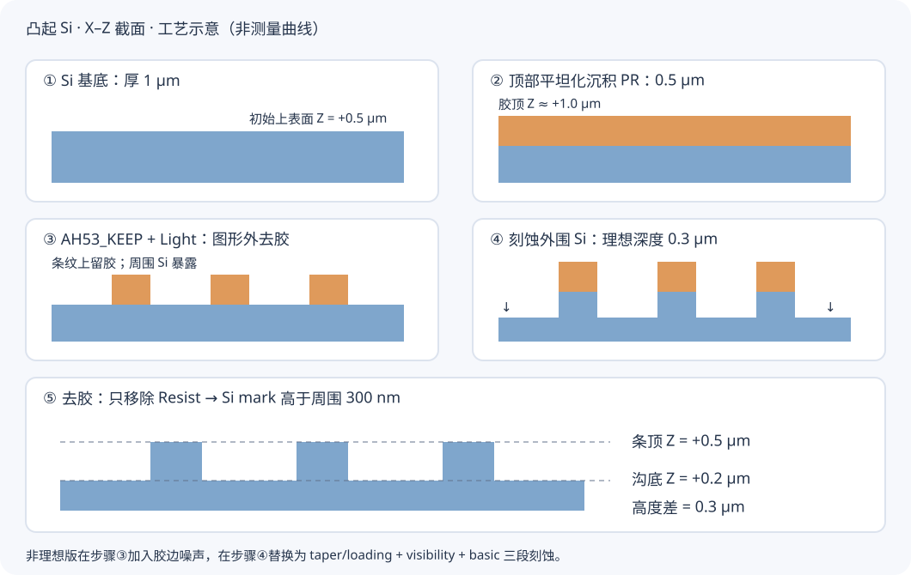
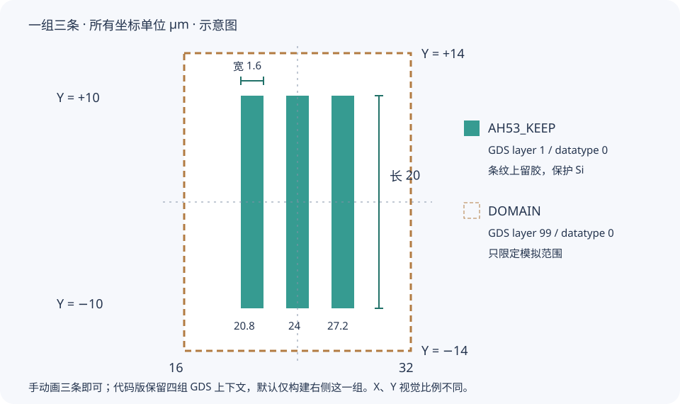
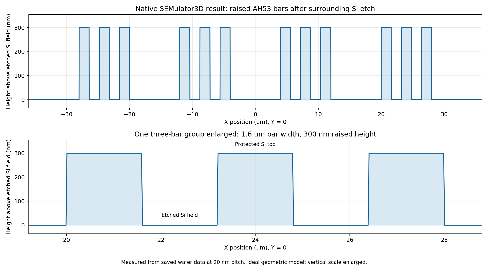
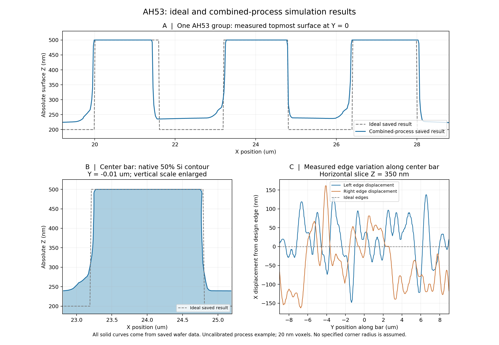
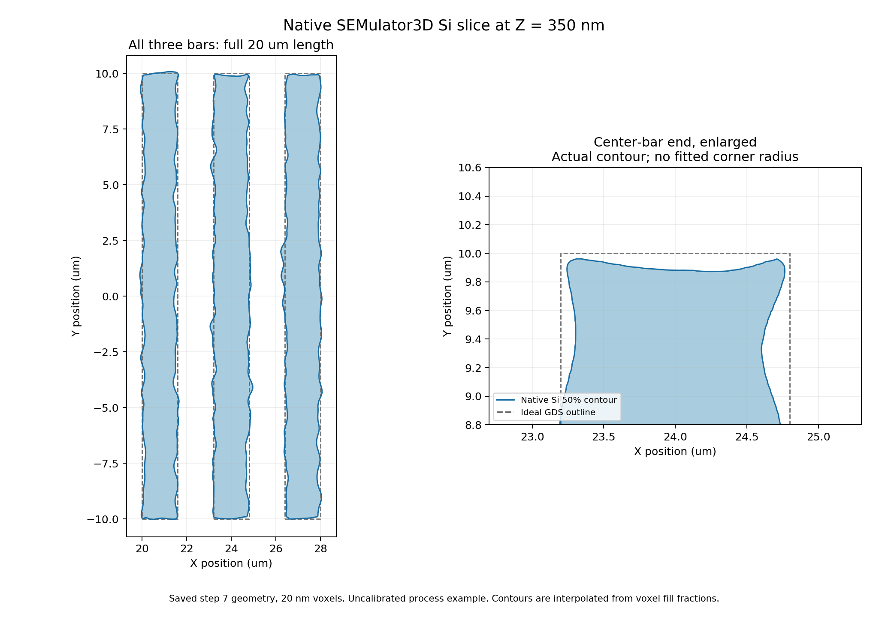

1．先确认我们做的是什么
mark 是凸出来的 Si，外围是被刻掉的 Si。GDS 上三条矩形表示需要保护的区域。曝光后光刻胶应留在三条矩形上方，周围露出硅；刻蚀后去胶，得到凸条。这里的 AH53 是我们此前建立的“简化单方向教学示例”，不是已经认证的商业 AH53 全版图。

本文对应电脑里的 D:\SEMulator3D9，版本文件确认是 9.3.0.0。菜单依据这套安装随附的官方帮助核查；窗口布局可被用户定制，因此用标签、菜单和字段名定位，不用固定屏幕坐标。
① 工艺仿真：SEMulator3D 依据 GDS 和工艺步骤计算 Si/PR 三维形貌。
② 格式转换：读取导出的 VDATA，把已经得到的形貌转换给其他软件；它本身不重新刻蚀。
③ 电磁仿真：Lumerical FDTD 加光源、边界、网格、监视器后求解电磁场。本教程主体完成①及 VDATA 导出；仅打开几何模型不等于完成③。
非理想工艺需要自己设定或用实验标定。软件不会仅凭“Si、300 nm、AH53”自动推断机台气体、压强、功率和真实缺陷。本例是真正执行的原生几何/行为工艺模型，参数用于教学；目前没有真实设备配方和 SEM/TEM 截面来校准其预测精度。
可先只做理想版，理解保凸极性和结果检查；再做非理想版。Multi Etch 属于高级建模功能，本机运行仍须有相应许可。
2．工程文件各有什么作用
| 文件 | 内容与作用 | 是否已经是结果 |
|---|---|---|
.gds / .cat | 二维版图、多边形、层号与顶层 cell | 否，没有刻蚀后的三维结构 |
-layermap.txt | 把 GDS 数字层映射成工艺 Mask 名称 | 否 |
.vmpd | 工艺材料数据库，如 Si_Xtal、Resist | 否；它不是 FDTD 光学色散库 |
.vproc | 工艺步骤、顺序、厚度、刻蚀模型与参数 | 否，是工艺输入 |
.zam | Manager 工程：关联输入文件、范围、分辨率和构建状态 | 仅有它不能证明已经构建成功 |
*-Output / .vwaf | 原生构建后的阶段状态与 wafer 数据 | 是；启用逐步保存后可看中间形貌 |
.vdata | 导出的体素材料/占比与元数据，可选界面平面方程 | 是，需确认导出的是去胶后的正确阶段 |
.fsp | Lumerical 工程，可仅有几何，也可带求解设置与结果 | 需另查是否真正运行过 FDTD |
新教程目录是 D:\CoventorProjects\AH53_Process_Tutorial。所有新运行输出放在自己的新子目录，原始工程保持原样。以前那个 AH53_Si_300nm 是已标记被替代的旧极性工程，不应作为凸起 mark 模板。
3．尺寸、单位和模拟范围
下文除专门标注 nm 或角度外，长度输入都用 µm（微米）。换算：1 µm = 1000 nm；300 nm 输入 0.3，20 nm 输入 0.02。
| 项目 | 教学值 | 意义 |
|---|---|---|
| Si 厚度 | 1.0 µm | 初始上表面 Z≈+0.5 µm，下表面 Z≈−0.5 µm |
| PR 厚度 | 0.5 µm | 涂胶后胶顶约 Z=+1.0 µm |
| 每条宽 / 长 | 1.6 / 20 µm | 条纹沿 Y；Y 从 −10 到 +10 |
| 条中心距 / 名义间隙 | 3.2 / 1.6 µm | 一组包含三条 |
| 三条 X 中心 | 20.8、24.0、27.2 µm | 保留右侧一组用于教学 |
| DOMAIN | X=16…32，Y=−14…14 µm | 16×28 µm；四边留出环境区域 |
| Model Resolution | 0.02 µm | 20 nm 体素；是离散分辨率，不是已证明的工艺预测精度 |
| 理想刻蚀深度 | 0.3 µm | 凸条顶 +0.5、周围沟底 +0.2，差 300 nm |

--full-layout 才改成全域构建。20 nm 下单组 1 µm 厚 Si 的包围网格约 800×1400×50，即 5600 万格。中间 PR 增高、界面、缓存和算法会额外占用内存；不能用最终压缩 VDATA 文件大小推算工艺求解内存。10 nm 相比 20 nm，三维体素数约增加到 8 倍，运行代价可能更高。
4．手动准备窗口、材料与单位
- 先在资源管理器新建
D:\CoventorProjects\AH53_Manual_Ideal_01。建议路径用英文和数字，减少旧版软件的路径编码问题。 - 打开 SEMulator3D。用 Help > About SEMulator3D 确认版本。用 Window > New 打开独立空窗口，避免替换已经打开的工程。
- 在 Window 菜单显示 Manager、Process Editor、Material Library 标签。注意 File > New 作用于当前活动标签，不是一次生成全部依赖文件。
- 切到 Material Library，File > Open 打开
D:\SEMulator3D9\apps\SEMulator3DMaterialsDatabase9.vmpd。然后 File > Save As，另存为新目录里的AH53_manual.vmpd。 - 展开材料组，确认存在
/Silicon/Si_Xtal和/Organics/Resist。如果使用其他材料库，工艺中必须选真实存在的材料，不要只把名字敲进去。 - 切到 Process Editor，File > New。新工艺通常自带第一步 Wafer Setup。
- 在 Process Editor 的 File > Properties 中，关联刚才保存的材料库，检查当前工艺 Model Unit = micrometers / µm。Tools > Options 的 Default Model Unit 只影响以后新文件，不能替代检查当前工艺单位。
- File > Save As 保存
AH53_manual.vproc。
相关官方帮助：材料库 · Process Editor 文件属性
5．从空白手动画 GDS 版图
以下菜单针对本机随附的 SEMulator3D Layout Editor。如果 Manager 配置的是第三方版图软件，菜单会不同。也可以先由后文代码生成 GDS，再从本节末尾的层映射开始。
5.1 新建布局库与顶层 cell
- 在 Manager 工具栏点 Launch Layout Editor；或从开始菜单的 Coventor SEMulator3D 9 程序组启动 Layout Editor。
- 在 Layout Editor 中选择 File > New > Blank。File > Save As 保存
AH53_layout.cat到新目录。 - 选择 Tools > Units > Microns。不要依赖默认单位。可在 Tools > Options > Grid 设 Working Grid=0.01、Display Grid multiple=50。
- 用 Cell > New 创建 cell；需要命名对话框时，可在下方 Command Line 输入
cellcreate -ui on，命名AH53_DEMO。如果已经有 unnamed cell，也可以画完后 Cell > Save 时命名。 - 若当前界面拒绝下划线，统一用
AH53DEMO；后面 GDS 导出和 Manager Top Cell 必须使用同一个名字。此前实际 GDS 的AH53_DEMO已成功导入；这里不假定所有旧 GUI 命名对话框行为完全一致。
5.2 创建两层
- 用 View > Layers > Browse 打开 Layer Browser。
- 在 Layer Browser 自己的 Layer > New 创建层，不是在主菜单里猜一个同名入口。
- 第一层：Layer 和 Mask name 均为
AH53_KEEP，GDS 字段填L1D0，GDS I/O=True。颜色自选。 - 第二层：Layer 和 Mask name 为
DOMAIN，GDS 字段L99D0，GDS I/O=True。范围层建议只显示轮廓，颜色与条纹分开。 - 若对话框包含 Mask contribution 与 Mask field polarity，可用 Add、Light。它们是编辑器层属性；真正决定保凸/挖槽的是后面的 Expose Material 工艺极性。
5.3 精确输入四个矩形
选择 Object > Rectangle，Input Mode=Corners。每次确认 Layer，输入两角坐标，然后 Apply；完成后 Close。不要靠鼠标拖拽估计宽度。
| 对象 | Layer | 第一角 (X,Y) | 第二角 (X,Y) |
|---|---|---|---|
| 条 1 | AH53_KEEP | (20.0, −10.0) | (21.6, +10.0) |
| 条 2 | AH53_KEEP | (23.2, −10.0) | (24.8, +10.0) |
| 条 3 | AH53_KEEP | (26.4, −10.0) | (28.0, +10.0) |
| 范围框 | DOMAIN | (16.0, −14.0) | (32.0, +14.0) |
若习惯命令栏，在单位为 Microns、当前层已选 AH53_KEEP 时，也可依次输入：
rectangle 20 -10 21.6 10
rectangle 23.2 -10 24.8 10
rectangle 26.4 -10 28 10然后切到 DOMAIN，再输入：
rectangle 16 -14 32 145.4 保存并导出 GDS
- 先 Cell > Save，再 File > Save。只保存 cell 不能保证整个库已经写入磁盘。
- 用 Cell > Summary 检查三条矩形和一个范围框；用 Layer Browser 分别隐藏显示两层，防止误画到同一层。
- 选择 File > Translators > Gds Out。Output file 填新目录
AH53_layout.gds；Library 选刚保存的 CAT；Top cell 选AH53_DEMO；Cell 字段留空；Scale factor=1。Top cell 与 Cell 不要同时填写。 - Apply 后 Close。也可 File > Save As，类型选 GDS；明确 Top cell 时优先用上述 Translator。
5.5 写层映射
用记事本新建纯文本 AH53_manual-layermap.txt，内容为：
AH53_KEEP 1 0
DOMAIN 99 0第一列是工艺掩模名，后两列为 GDS layer、datatype。检查 Windows 没有把文件误存为 .txt.txt。不设映射时也可以用 L1D0、L99D0，但所有工艺引用必须一起改；本教程统一使用 AH53_KEEP、DOMAIN。
本机官方帮助：Rectangle 输入 · 建层及 GDS 字段 · Gds Out
6．连接版图、工艺与 Manager
- 回到 SEMulator3D 的 Manager 标签。Analysis or Process File 选
AH53_manual.vproc。 - Layout File 选
AH53_layout.gds；Layout Map File 选刚建的AH53_manual-layermap.txt。GDS 可直接用于工艺构建，不要求先转成 CAT。 - 点击 Top Cell 旁的 Scan，从扫描结果选
AH53_DEMO。Top cell 不是 GDS 文件名。 - Model Resolution 输入 0.02，前提是工艺单位已经确认是 µm。
- Model Extent 选 Single Mask，Mask=DOMAIN；或者明确选 Bounding Box：Xmin=16、Xmax=32、Ymin=−14、Ymax=14。二者选一种，不要让不同位置定义冲突范围。
- 如果 Wafer Setup 使用自己的 Override X-Y Extents，确保同样选 DOMAIN 或上述范围。不要让 Wafer Setup 的大范围覆盖 Manager 的小范围。
- 勾选 Save After Every Step，便于事后看光刻胶与每一段刻蚀；勾选 Launch Viewer After Building，方便构建后查看。
- 在 Manager 中 File > Save As，保存
AH53_manual.zam。依赖文件均在新目录；最后 File > Save All。
代码版 GDS 中保留了四组条纹。若这里选择 All Active Masks 而不是 DOMAIN，可能意外把计算范围扩展到四组。非理想 Multi Etch 会明显更慢。
7．六步理想工艺：逐项输入
在 Process Editor 中打开 Process Library。可双击预设步骤插入，也可以用 Add 下拉选完整步骤类型。每加一步都检查顺序、Wafer 和材料。以下第 1–5 步才是结构生成，第 6 步只是把最终结构导出。
第 1 步：Wafer Setup，建立 Si
- 选中第一个 Wafer Setup，名称可写
01 Si substrate 1um。 - Wafer Name=
Wafer1；Material=/Silicon/Si_Xtal；Thickness=1.0。 - 范围用 DOMAIN。若界面区分默认范围与覆盖范围，只在需要时启用覆盖，并保持与 Manager 一致。
- 历史工程 Surface Plane=(100)、Notch Vector=<110>、Notch Design Direction=X（XML 内部名称分别为 e100、e110）。本例未做晶向选择性刻蚀，保持这些值即可。
16×28×1=448 µm³。第 2 步：Planar Deposit，涂 0.5 µm PR
- 选择 Deposition > Planar Deposit，名称
02 Coat resist 0.5um。 - Wafer=Wafer1，Side=Top，Material=/Organics/Resist。
- Thickness=
0.5；Deposit type=Planarizing；Reference Plane=Highest Elevation。 - 这里不加 AH53_KEEP 掩模；先整面涂胶，再由下一步图形化。
第 3 步：Expose Material，保护三条 mark
- 选择 Lithography > Expose Material，名称
03 Protect AH53 ridges。 - Wafer=Wafer1，Side=Top，Material=/Organics/Resist。
- Thickness=0。本步骤的 0 是“处理整层所选材料”的特殊定义，不是零厚度、没有曝光。
- Mask Name=AH53_KEEP；Polarity=Light。
- Exposed Material 留空，使曝光区域的 PR 被移除，而不是替换为另一种材料。
- 理想版关闭 Lithography Emulation、Edge Noise；Expose through Materials 留空（历史 XML 的 exposeThroughSolids=false）。
第 4 步：Straight Etch，外围刻 Si 300 nm
- 选择 Etch > Straight Etch，名称
04 Etch surrounding Si 300nm。 - Wafer=Wafer1，Side=Top，Depth=
0.3。 - 被刻材料只选
/Silicon/Si_Xtal，相对 Etch Ratio=1。 - 不要把 Resist 也选为同速被刻材料。此理想步骤假设 PR 不被消耗。
- 不另加 AH53_KEEP 数字掩模：上一阶段留下的实体 PR 已经在保护 Si。高级额外 Mask 和 Selectivity 沿用关闭设置。
第 5 步：Remove Materials，去胶
- 选择 Utility > Remove Materials，名称
05 Strip resist。 - Wafer=Wafer1；Target Materials 只选 /Organics/Resist。
- 若有 Update Voids，保持启用。不要选中包含 Si 的上级材料组。
第 6 步：Voxel Data Export，写出真正结果
- 选择 Save/Import/Export > Voxel Data Export，放在去胶之后，名称
06 Export final VDATA。 - Wafer=Wafer1；Output File 填
D:\CoventorProjects\AH53_Manual_Ideal_01\AH53_final.vdata。 - Export Dopants=False：本例没有掺杂。
- Export Plane Equations：首次对照历史文件可设 False；若计划较精细的界面重建，可设 True，但应接受文件更大。它记录现有模型的界面信息，不会提高本次 20 nm 构建分辨率。
它是工艺序列中的导出步骤。不能把 .zam 改名为 .vdata，也不是在记事本里手写三维形状。
8．真正运行、查看与验证结果
8.1 点击 Build，等待原生工艺求解
- File > Save All。切到 Manager，确认输入文件与 Top Cell、DOMAIN、0.02 µm 无误。
- 在 Model Builder pane 底部点 Build。若提示保存 .zam，先保存再继续。
- 查看构建日志，确认六个步骤依次完成。显示输入文件、导出脚本或已有截图不等于本次构建已成功。
- 第 6 步应明确完成 VoxelXML/VDATA 导出，且指定文件真实存在。某步报错时保留日志，不要把部分结果当作全流程成功。
- 以后改参数再 Build 通常可 Intelligent Restart，从改变的步骤继续。需要强制重跑时用同一 pane 的 Rebuild All。改变体素分辨率或范围通常会导致全量重建。
8.2 逐步看，而不是只看最终外观
- 若勾了 Launch Viewer After Building，完成后进入 Viewer。右侧 Scene pane 中选择阶段。
- 先看第 2 步：整面胶；再看第 3 步：条纹上留胶；第 4 步：周边硅下降；第 5 步：去胶后凸 Si。
- 用 View > Fit to Window 适配画面。
- 用 View > Enable Cross Sections；也可画布右键 Open Cross Section > Open with Y Normal，得到 X–Z 截面。
- 在 Cross-Section pane 的 Options > View > XZ 轴对齐；把切面移动到 Y=0。只看截面可用 View > Draw Cross-Section Plane Only。
- 若放大 Z 轴仅为看清 300 nm 高差，需标注显示比例。不能从经过 Z 缩放的透视截图直接估算侧壁角。
8.3 对照这些可测量值
| 检查位置/项目 | 理想单组应看到什么 |
|---|---|
| 条顶：(20.8,0)、(24,0)、(27.2,0) | Z≈+0.5 µm |
| 沟底：(22.4,0)、(25.6,0)，开阔区 (18,0) | Z≈+0.2 µm |
| 高差 | 0.5−0.2=0.3 µm=300 nm |
| 最终 PR | 体积 0 |
| 去除 Si 体积 | (16×28−3×1.6×20)×0.3=105.6 µm³ |
| 最终 Si 体积 | 448−105.6=342.4 µm³ |
这些是几何和采样点检查，不是整个表面达到某个误差上限的证明。此前完整四组理想工程的体积是初始 2016、最终 1526.4、去除 489.6 µm³，不能与本节单组数字混用。

9．八步非理想工艺：逐项输入
建立新目录 D:\CoventorProjects\AH53_Manual_Nonideal_01，使用相同单组版图、材料、20 nm 分辨率和 DOMAIN。若从理想工程另存，Manager 的 Save As 不会自动复制并重定向所有依赖：分别另存 .vproc、.vmpd、版图/映射，并在新 .zam 重新选择路径；尤其要改 VDATA 输出路径。手动比较时若希望密度算法的上下文也与旧脚本一致，可使用代码生成的完整 12 条 GDS、保留同一组三条 DOMAIN；只画三条适合理解局部基本流程，不承诺与完整 GDS 上下文的 loading 结果完全相同。也可先用代码 --generate-only 生成全套独立输入，再在界面逐项核查。
第 1、2 步与理想版相同。将曝光改为下述第 3 步；删除理想 Straight Etch，把它替换成第 4、5、6 三段；去胶移到第 7 步，导出第 8 步。
9.1 第 3 步：在光刻胶上加入端部圆化与边噪声
仍使用 Expose Material：Wafer1、Top、Resist、Thickness=0、AH53_KEEP、Light、Exposed Material 空，Expose through Materials 留空（历史 XML 的 exposeThroughSolids=false）。在它的扩展区域输入：
| 字段 | 值 | 含义与边界 |
|---|---|---|
| Lithography Emulation | 启用 | 对理想图形做光刻形貌近似 |
| Size Threshold | 0.12 µm | 120 nm 特征尺度；不等于规定所有圆角半径为 120 nm |
| Edge Noise | 启用，Gaussian | 对 PR 边缘引入空间相关扰动 |
| RMS Amplitude | 0.06 µm | PR 边扰动输入 60 nm，不是最终 Si LER 的测量值 |
| Correlation Length | 0.5 µm | 500 nm 相关长度 |
| Advanced / Seed | 启用，53 | 固定随机种子便于同条件复现；软件版本和离散网格仍需一致 |
9.2 第 4 步：Multi Etch 主刻蚀，220 nm 名义深度
- 添加 Multi Etch；Wafer1、Top；Depth=
0.22。 - 在 Etch Parameters 材料表分别设 Si 和 Resist 对应行。历史文件对 PR 使用 /Organics/ 材料组；本例实际有机材料只有 Resist，若你的库里还有其他有机材料，不要无意全部纳入。
- 在 Si 的 Taper 设置中填写 Sidewall Angle；不是把它当成晶向角或入射方向。
| 材料行 | Etch Type | Etch Ratio | Lateral Ratio | 该类型额外参数 |
|---|---|---|---|---|
| /Silicon/Si_Xtal | Taper | 1 | 0.15 | Sidewall Angle=10°，0° 表示竖直 |
| Resist / 本例 Organics | Sputter | 0.25 | 0.05 | Sputter Ratio=0.5；Max Yield Angle=50° |
PR 的相对刻蚀速率表示胶在 Si 刻蚀期间也会损耗；它不等于已经知道真实设备每秒刻蚀多少纳米。全局名义 Depth 也不等于所有局部点最后都下降同样距离。
开启图形密度效应 Pattern Dependence
- 在全局 Pattern Dependence 区域启用并点 Edit。
- Global Mask=AH53_KEEP，Polarity=Light，Lithography Resolution=0。
- Local Mask 选 Use Global。
- 启用 Advanced 的 Depth 依赖，按下表输入。PR 材料行自己的 Depth/Lateral/Sputter Pattern Dependence 保持关闭，避免误套 Si 的密度输入。
| Depth 依赖字段 | 值 |
|---|---|
| Constant | 0.6 |
| Coefficient 1 / Radius 1 / Directed 1 | 0.4 / 3.2 µm / False |
| Coefficient 2 / Radius 2 / Directed 2 | 0 / 1 µm / False |
| Averaging | False |
本例深度系数可理解为 0.6 + 0.4 × Gaussian(open mask, radius=3.2 µm)；第二个 Gaussian 项权重为 0，不起作用。它让局部开口密度影响刻蚀进展，产生宽场区与条间窄区差异。不是仅在最终表面上手工加凹凸。
Advanced 中 Level of Acceleration=0（XML：acceleration），沿用原始体素；Enhanced Corner Accuracy 关闭（历史 XML：useImprovedNumerics=false）。第 4 步材料类型没有选 Visibility，模板里留存的 Source Sigma 不应被当成这一段生效的可见性模型。
9.3 第 5 步：Multi Etch Visibility，方向性修整 40 nm
- 再加一个 Multi Etch，Wafer1、Top，Depth=
0.04。 - Si：Type=Visibility，Etch Ratio=1，Lateral Ratio=0.1。
- PR / Organics：Type=Basic，Etch Ratio=0.1，Lateral Ratio=0.05。
- 全局 Pattern Dependence 关闭；PR 材料专属依赖也关闭。
- Source 选择固定方向：Tilt=20°，Twist=0°，Angular Sigma=0.12 rad。注意 Sigma 是弧度，约 6.88°，不能输入 0.12°。
- Advanced：Level of Acceleration=0；Enhanced Corner Accuracy 关闭（XML：useImprovedNumerics=false），以匹配历史设置。
此阶段包含方向与遮挡的影响。实际历史日志中自动使用了 128 条 rays；这是运行日志记录，不是要求你在未提供该字段的界面中寻找“128”输入框。
9.4 第 6 步：Basic 各向同性收尾 40 nm
- 增加 Basic Etch / Enhanced Basic Etch，Wafer1、Top；只选 Si_Xtal，Etch Ratio=1。
- Depth=
0.04，Lateral Ratio=1。横向和竖向比例相同，带来横向侵蚀和弯曲过渡。 - Pattern Dependence=None；Overhang Rate 使用 Lateral Ratio；Selectivity=False。若界面提供 Disable Skirting，保持 False；历史 XML 对应 disableSkirting=false。
- 此时 PR 仍然在，不能在本步之前去胶。
GUI 里不必寻找一个凭空叫“Isotropic Etch”的独立菜单；本例是 Basic 模型用 Lateral Ratio=1 实现各向同性分量。圆角是多段工艺共同形成的结果，不是指定一个 CAD fillet 半径。
9.5 第 7、8 步：去胶、导出
- 第 7 步 Remove Materials，只删 Resist。
- 第 8 步 Voxel Data Export，Wafer1，输出改为新目录
AH53_nonideal_final.vdata；Dopants=False，Plane Equations 按用途选择。 - 保存全部，在 Manager Build。查看每一段 PR 损耗、侧壁、沟底，再检查最终去胶。
10．此前实际得到的不完美结果
下面数字来自以前完成的非理想工程和保存阶段，不是根据输入参数直接填写的预期值。其范围为本教程同一组三条、20 nm 体素、seed=53。新代码采用相同配方；非理想版本次没有重复跑一遍，不能把历史数据冒充为新运行输出。
| 指标 | 历史实际结果 | 怎样解读 |
|---|---|---|
| 初始条顶 / 最终条顶 | 约 +0.5 / +0.5 µm | 三条 mark 保持凸起 |
| 两条内部间隙样点刻深 | 262.03、262.19 nm | 由初始顶面减最终沟底，不是名义 300 nm |
| 开阔区 (18,0) 样点刻深 | 281.25 nm | 和条间不同，显示局部形貌/图形依赖 |
| 最终 Si 体积 / PR 体积 | 347.312849 µm³ / 0 | 初始 Si 为 448 µm³ |
| 主刻蚀 PR 消耗 | 约 12.01% | 主刻蚀前后胶体积之差；不是整段流程总消耗 |
| 条中心 X | 平均 CD | 左 / 右 LER 1σ | 左 / 右局部侧壁角 |
|---|---|---|---|
| 20.8 µm | 1468.74 nm | 58.23 / 58.10 nm | 13.66° / 9.17° |
| 24.0 µm | 1540.01 nm | 57.18 / 71.77 nm | 16.64° / 9.32° |
| 27.2 µm | 1515.36 nm | 69.86 / 55.25 nm | 17.30° / 8.97° |
测量约定：CD/LER 在 Z=0.35 µm、Y=−9…9 µm，以 Si 体积分数 50% 的插值轮廓取边；每条 900 个位置。LER 是边坐标总体标准差，未去趋势、未做 PSD/测量仪带宽修正。侧壁角是 Y≈−0.01 µm、Z=0.31…0.45 µm 的局部 x(z) 线性拟合，并非整条侧壁恒定角度。高度使用原生点位高度查询。
20 nm 体素上输出小数位不等于实际达到 0.01 nm 或亚体素物理精度。输入 Taper=10° 也不等于所有步骤后左右壁都为 10°。没有零倾斜对照时，不能把全部左右差异唯一归因于 Tilt。


11．通过代码一键生成并仿真
代码位于 D:\CoventorProjects\AH53_Process_Tutorial\code。它把旧的依赖绝对工程路径的生成器整理为独立入口，在全新的空输出目录里生成输入、调用本机原生 ModelBuilder、检查阶段结果并验证 VDATA。不会去覆盖此前的 Raised/Nonideal 工程。
11.1 最直接：双击一键入口
- 在资源管理器进入教程文件夹。确认
D:\SEMulator3D9仍是软件安装位置，许可证可正常使用。 - 双击
run_ideal.cmd，先完成理想版；它会调用脚本并在控制台显示新输出目录及构建日志位置。默认输出是教程目录下的runs/时间戳_ideal；非理想版为runs/时间戳_nonideal。结束时窗口会暂停，先记下路径再按键关闭。 - 等控制台报告完成，打开本次输出目录内的 .zam，在 SEMulator3D 查看结果，检查最终 .vdata 和 native_verification.json。
- 理想版方向确认后，再双击
run_nonideal.cmd。这会真正运行 Multi Etch，耗时明显更长；不要只因几分钟没弹出三维窗口就重复启动。
下面给出命令行方式，便于你明确每一个输入。所有命令在 PowerShell 中运行；双引号保护路径，开头的 & 是 PowerShell 执行带引号程序路径的语法。
11.2 第一次先只生成输入，不启动仿真
$py = "D:\SEMulator3D9\runtime\python\v3.6\NT40_x64\python.exe"
$runner = "D:\CoventorProjects\AH53_Process_Tutorial\code\run_process.py"
& $py $runner --help
& $py $runner --mode ideal --generate-only `
--output "D:\CoventorProjects\AH53_Generated_Ideal_01" `
--semulator-root "D:\SEMulator3D9" --voxel-nm 20--generate-only 只写 GDS、材料副本、工艺和 Manager 输入。此时可打开 .zam 逐项对照前文；不能说已经完成了工艺仿真。生成目录随后若被 GUI 修改，需用 GUI Build，不能再次往这个目录生成覆盖。
11.3 一条命令：从零生成 + 真正运行理想版
& $py $runner --mode ideal --run `
--output "D:\CoventorProjects\AH53_Run_Ideal_01" `
--semulator-root "D:\SEMulator3D9" --voxel-nm 20--mode ideal：选六步理想流程。--run：生成输入之后实际启动并等待 ModelBuilder，随后检查保存阶段；它不是只画一个预设几何。--output：必须是全新的路径或允许的空目录。如果已存在模型，换一个新后缀，例如 02。拒绝覆盖是为了防止输入重生成抹掉结果。--semulator-root：软件安装根目录，不是某个项目目录。--voxel-nm 20：以 nm 为命令行输入，程序转换为工艺单位 µm。
11.4 一条命令：非理想版
& $py $runner --mode nonideal --run `
--output "D:\CoventorProjects\AH53_Run_Nonideal_01" `
--semulator-root "D:\SEMulator3D9" --voxel-nm 20这里才会运行上述胶边形貌、220 nm 主刻蚀、40 nm Visibility 和 40 nm Basic 收尾。默认也是一组三条。可以先将 --run 改为 --generate-only 检查工艺，但之后真正从零运行应选另一个新输出目录。
11.5 可选：导出界面平面 / 全四组
# 保留更多体素内界面信息；会增加VDATA体积
& $py $runner --mode ideal --run --planes `
--output "D:\CoventorProjects\AH53_Run_Ideal_Planes_01" `
--semulator-root "D:\SEMulator3D9" --voxel-nm 20
# 全四组：先只生成检查范围，再考虑真正运行
& $py $runner --mode nonideal --generate-only --full-layout `
--output "D:\CoventorProjects\AH53_Generated_Full_01" `
--semulator-root "D:\SEMulator3D9" --voxel-nm 20不建议第一次就把非理想全四组或 10 nm 网格直接跑起来。先在一组三条完成端到端检查，再逐级扩大。本教程没有默认启动耗时的全域非理想计算。
11.6 已有本脚本结果：只重新导出，不重做刻蚀
& $py $runner --export-only --planes `
--output "D:\CoventorProjects\AH53_Run_Ideal_01" `
--semulator-root "D:\SEMulator3D9"该动作读取本入口已完成项目的保存 wafer，从最终去胶阶段导出另一份文件，不重新执行步骤 1–5。它要求该目录已有本入口元数据与完整阶段结果，并拒绝覆盖导出文件。这不是任意 .zam 的万能导出器：此处的阶段约定是我们的 ideal=第 5 步、nonideal=第 7 步。
11.7 检查 VDATA 文件是否完整
& $py $runner --check-only `
--vdata "D:\CoventorProjects\AH53_Run_Ideal_01\AH53_Ideal.vdata"纯文件完整性检查会检查 XML、体素维度、压缩块与数据长度；它不启动 ModelBuilder，也不等于验证所有工艺物理参数。实际 SDK 形貌验证与文件容器检查是两层不同的检查。
11.8 结果在哪里，怎样判断成功
先看控制台打印的绝对输出目录，再进入该目录，不要去安装目录找。正常结果应有：
| 输出 | 你用来做什么 |
|---|---|
.gds、-layermap.txt、.vmpd、.vproc、.zam | 在 GUI 打开并核对输入 |
build.log | 核对实际 ModelBuilder 执行与失败原因 |
*-Output 与保存阶段 | 逐步查看 PR、刻蚀和最终 Si |
AH53_Ideal.vdata / AH53_Nonideal.vdata | 真正导出的最终体素结构 |
parameters.json | 生成时的参数记录；不是自动控制工艺的可编辑配置入口 |
native_verification.json | 原生模型完成状态、PR 清除、Si 顶部/沟底采样、体积等 |
以实际控制台与文件清单为准，重新导出的文件会用区别于原始导出的名字。程序退出码不是 0 时，先看错误和日志；不要只因为存在一个 .vdata 文件就判定本次运行成功。
12．代码每一层在做什么
这组脚本是本机 SEMulator3D 9.3 教学工作流，不宣称与任意版本的 XML/SDK 都兼容。它不把其他工程的最终体素拿来冒充本次新仿真。
| 层次 | 执行内容 | 为什么需要 |
|---|---|---|
| run_process.py | 解析模式、动作、分辨率、目录；顺序调度生成、构建与验证 | 明确“只生成”和“真的仿真”边界，避免覆盖 |
| project_generator.py | 组织独立输入、范围、路径与参数记录 | 不再依赖旧 Raised 工程的绝对路径 |
| ideal_generator.py | 写 12 条上下文 GDS、映射、材料副本、六步理想 XML/Manager | 二维图形与工艺输入可在 GUI 中复查 |
| nonideal_generator.py | 在理想基础上改 PR 形貌，替换成三段 Si 刻蚀与 PR 消耗 | 与手动八步流程相对应 |
| 本机 ModelBuilder.exe | 真正执行工艺模型并保存中间 wafer | 这是从输入变为三维工艺结果的关键执行层 |
| native_verify.py | 通过本机 9.3 SDK 打开保存阶段、查询材料和高度、必要时原生导出 | 读真实结果，避免只根据输入声称成功 |
| vdata_io.py | 用标准库解析 VDATA 容器、解压并核对字节数 | 发现截断、错误维度、损坏压缩块和缺失段 |
12.1 GDS 生成
生成器以 µm 为坐标单位、1 nm 为 GDS 数据库精度，用矩形角点写 L1/D0；组中心 −24、−8、8、24，每组偏移 −3.2、0、+3.2。DOMAIN 单独写到 L99/D0。GDS 数据库精度 1 nm 不意味着最终 3D 模型或工艺预测有 1 nm 精度。
12.2 为什么读本机示例模板
9.3 的 .vproc/.zam XML 存在版本化字段。代码从安装随附的兼容示例取得步骤原型，再填入本例的材料、深度与启用项，生成新的步骤 ID 和项目路径。只改当前模型真正启用的分支；模板残留的未启用字段不能当作当前物理作用。
这些示例来自本机安装的 FinFET、PatternDependence、VDataPythonIO、DRIE_Loop 示例。教程没有捆绑厂家 SDK、许可证或整份手册；换一台机器需要合法安装对应版本与组件。
12.3 原生执行环境
控制入口使用独立子进程，配好 SEMulator3D 安装、运行库和 Python SDK 环境。旧 SDK 使用本机随附的 Python 3.6，不能把 .pyd 直接丢给任意新版 Python。ModelBuilder 的工作目录固定为本次项目目录，文件引用使用明确路径，避免历史“刻蚀成功但第 8 步找不到 .vproc”的错误。
# 核心动作的概念顺序；完整可运行实现见 code/run_process.py
生成全新项目输入
→ 启动 ModelBuilder.exe -m 本次项目.zam
→ 等待原生构建结束并检查退出状态
→ 按步骤号定位最终去胶阶段
→ 原生 SDK 检查 Si、PR、体积和高度
→ 验证 .vdata 文件结构
→ 写 native_verification.json保存 wafer 的随机文件名不是工艺语义。程序按步骤号定位理想第 5、非理想第 7 步，不能假定所有工程都会有同一个 xxxx.vwaf 名字。检查最终 PR 体积为 0；非理想沟底只测量并记录，不强制改成 300 nm。
12.4 导出与容器检查不是造形
VDATA 导出读取原生 wafer，不重新按参数搭建一套“看起来相同”的 CAD。文件检查解析 XML 中网格和压缩块，核对材料/占比数据规模；不会用三角化代替工艺求解。导出平面信息时也要验证该数据段确实存在。
13．怎样修改参数与设计对照
13.1 两种可靠的改法
- GUI 改法：先
--generate-only生成新项目，打开 .zam，在 Process Editor 修改并 Save All，再从 Manager Build。这样参数改动来自真实 .vproc。不要随后再次执行生成器覆盖这个项目。 - 代码改法：复制一份教程代码到自己的新目录，在生成器中修改对应活动参数，再用新输出目录运行。长度遵守工艺单位 µm；命令行暴露的分辨率、范围和 planes 可直接用参数调整。
不要只改 parameters.json 然后期待工艺自动更新。它是生成时的记录，不是这套程序自动读取并驱动所有步骤的配方配置。运行后应同时保存真实 .vproc、.zam、日志和记录。
13.2 做单因素对照，再组合
| 想看什么 | 先修改什么 | 保持什么 |
|---|---|---|
| 侧壁倾斜 | Taper Sidewall Angle，例如 0/5/10° | 胶轮廓、分辨率、密度、后两段刻蚀相同 |
| 横向侵蚀 | Basic Lateral Ratio 或收尾 Depth | 其余流程一致；若改总深度，要明确是否重分配名义预算 |
| PR 随机边缘 | RMS、Corr Length、Seed | 每次记录种子；单个 seed 不是统计结论 |
| 方向性修整 | Visibility Tilt=0° 与 20° 对照 | 同一 PR 噪声种子和源角宽 |
| 图形密度效应 | Pattern Dependence 关闭 / 开启 | 相同布局和范围，避免边界环境变化混杂 |
| 离散误差 | 20 nm → 10 nm，必要时更细 | 同配方、同范围、同测量高度/定义 |
比较 CD、侧壁、LER、圆化与深度时，先明确测量切面和定义。20 nm 下已经出现的曲线小数不是收敛证据；如果研究 10 nm 位置误差，应另做网格与导出/转换误差分析。真实设备预测还需要用 SEM/TEM/AFM、实测刻蚀速率、选择比、图形密度测试结构去标定。
把模拟域从单组扩到四组时，loading 的上下文可能变化，不能承诺局部结果逐字节相同。也不要以“保存了完整 GDS”来声称已经跑完完整大域。
14．VDATA、界面与后续 FDTD
14.1 记事本为什么看见英文编码
.vdata 是包含 XML 元数据和压缩编码体素数据的导出容器。体素可携带材料身份与占比；可选平面方程还描述体素内界面。编码文本不是逐行可读的“X Y Z Si”清单。后缀不代表它是三角面片、STEP 实体或简单的裸 0/1 数组。
要看真实体素，应通过原生 SDK/已验证解码工具读取材料、分数、网格间距与轴顺序，或在 Viewer 切片。直接把后缀改成 .mat、.stl、.fsp 不会转换数据。
14.2 Plane Equations 应怎样选
本机历史导出是关闭的；保留材料占比不一定能唯一反推原有连续界面。后续需要尽量保留界面时，可从已保存的 wafer重新导出带 Plane Equations 的 VDATA。它会增加存储，对应信息仍受原始模型和算法限制，不创造新的物理细节；启用后也要核对下游读取器是否使用这段数据。
14.3 接上之前已经整理好的转换器
此前独立的 VDATA→Lumerical 程序目录是 D:\CoventorProjects\Coventor_VDATA_to_Lumerical。它读取真实 VDATA，支持完整几何和减面路线；本教程没有改动该纯净程序目录。
# 使用安装了转换器所需依赖的主Python环境，不是强制用旧SDK Python3.6
python "D:\CoventorProjects\Coventor_VDATA_to_Lumerical\convert_vdata.py" `
"D:\CoventorProjects\AH53_Run_Nonideal_01\AH53_Nonideal.vdata" `
--output "D:\CoventorProjects\AH53_Conversion_New_01" --verify-fdtd文件名请以本次输出实际清单为准。先导出并验证形貌，再谈三角化与 QEM 减面；几何转换误差和工艺误差要分别记录。减少 CAD 面片或 .fsp 文件大小不自动等于减少 FDTD 网格数或电磁求解内存。
之后做 532 nm 光学求解，可参考此前单波长设置研究：VDATA→Lumerical 转换器仓库（FDTD 资源报告保留在原电脑）。其中 40/60 nm 只做过短时试跑和资源测量，不能当作已收敛的光学结论。本教程不自动发起新的大内存 FDTD 求解。
15．常见问题逐项排查
| 现象 | 优先检查 | 修正方法 |
|---|---|---|
| 条纹变成沟槽，极性反了 | Expose Material 的 Mask 与 Polarity | AH53_KEEP、Light；先看第 3 步应为条上留胶，再重建后续 |
| 整块 Si 一起变低 | 胶是否留下；刻蚀前是否去胶；是否把 Resist 当 Si 同速刻 | 按 PR→曝光→刻 Si→去胶顺序检查中间阶段 |
| 完全没有条纹 | Top Cell、层号/映射、坐标单位、选错 DOMAIN | Scan；核对 L1D0/L99D0、µm；GDS 直读检查 |
| 胶没有完全开口 | Expose Thickness 和 Exposed Material | Thickness=0 处理整层；Exposed Material 空 |
| 尺寸大了或小了 1000 倍 | 当前工艺 Model Unit、Layout Units、GDS Scale | 明确 µm；GDS 导出 Scale=1；重新核对边界坐标 |
| 看上去曲线很平滑，是否更精确 | 显示平滑/插值、Z 轴缩放与网格 | 用原生截面、材料占比和数值测量；另做网格收敛 |
| 非理想刻深只有约 262 nm | 名义输入和局部实际深度的区别 | 这是该配方的结果；先测量，再校准配方，不能强行填成 300 |
| Multi Etch 不可用 / license 错误 | Advanced Modeling 模块与原生许可环境 | 确认本机正常授权功能；先用 Straight Etch 理解基本流程 |
| ImportError / .pyd 加载失败 | SDK Python 版本、API 版本、PATH/运行库 | 用脚本提供的隔离环境和本机随附 Python3.6；不能随意切新版 Python |
| 前面刻蚀成功，第 8 步找不到 .vproc | 进程工作目录与相对文件引用 | 从项目目录运行；新脚本固定 cwd 并使用明确文件路径；可只恢复导出 |
| VDATA 不在期待的位置 | 导出步骤实际 Output File、是否真执行、是否写到别的 .zam 目录 | 用绝对路径；看最后日志；不要在安装目录或旧工程猜文件 |
| 已有 VDATA，但本次运行失败 | 文件时间、步骤完成状态、导出日志 | 在全新目录运行并验证；旧文件存在不证明新构建成功 |
| 生成后没有 3D 窗口 | 是否只用了 --generate-only；Launch Viewer 是否关闭 | 真正 Build；命令行可不自动弹 Viewer，完成后手动打开 .zam |
| 第二次命令拒绝输出目录 | 防覆盖规则 | 换全新目录；已有结果仅重新导出用 --export-only |
| CPU 占用很久、内存快速增长 | 是否误选全域、是否过细网格、是否启用 Multi Etch | 先一组20nm；不要重复启动；依据日志判断；保存资源使用记录 |
| 改 JSON 没效果 / 改 GUI 后又丢了 | 记录文件不是配置；是否重新运行生成器 | 在真实 .vproc 修改并 Save All/Build；或改生成器后用另一个新项目 |
16．本次验证范围与原始证据
手动菜单由本机 9.3 官方 HTML 帮助逐项核查，没有接管你当前 GUI，也没有假装每个对话框都经过新一轮人工点击。全部工艺参数另与历史实际 .vproc、.zam、材料与运行日志交叉核对；原始工程未被重建或覆盖。
旧理想日志完成六步，总计约 144 秒（全四组，含导出）。旧非理想首次 1–7 步约 18 分钟，步骤 8 曾因工作目录问题失败；随后恢复运行跳过 1–7，只重新导出并成功，约 30 秒。时间是历史本机记录，不是任何机器和网格都固定如此。
本机官方帮助入口
- Manager：Build、重启与失败处理
- Wafer Setup
- Planarizing Deposit
- Expose Material
- Straight Etch
- Multi Etch
- Voxel Data Export
- Viewer 截面与轴对齐
本机帮助链接依赖这套安装路径；从 HTTP 预览时，浏览器可能禁止跳转 file 链接，直接在本地打开此教程或复制路径即可。教学包没有复制或公开上传厂家手册、SDK 与许可证。